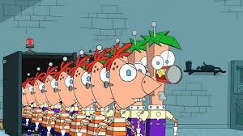
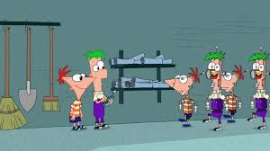

He has many of the same characteristics as Phinious too. He is good at making stuff (but not quit as good as Ferbot) and he is extreemely eficient.
He is the one doing all the magor work like welding and bolting (and sometimes the occasional alien impersonation). He is the one taking all the insporation and blueprints from Phinidroid and turning it into a reality.
Their creation and purpose.
They were created by mysterious meens. One second you see Phinious inspired, and another you see tons of robots walking through a door.

They were created to help the boys build all that their ideas that they couldn't build on their own.
There was lots to do such as:
- A completely food-based water park,
- A tunnel to the center of the Earth,
- A chamber of invisibility,
- A microscopic zoo that rests on the head of a pin
